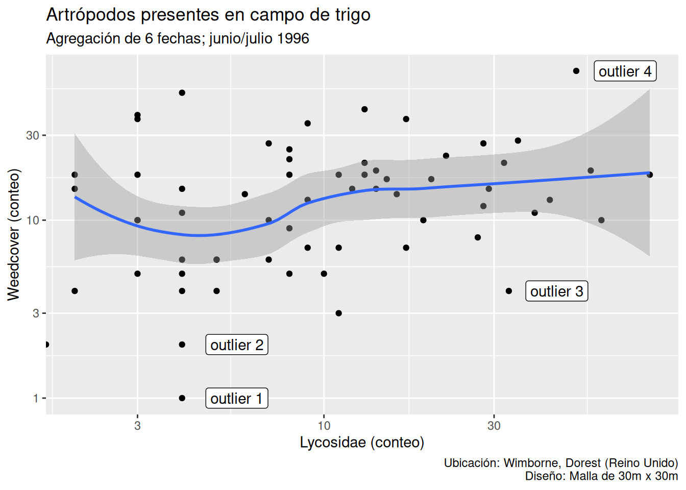
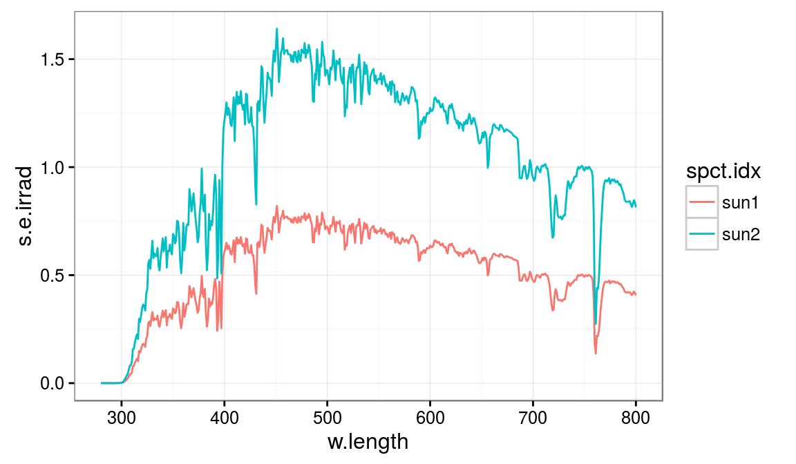
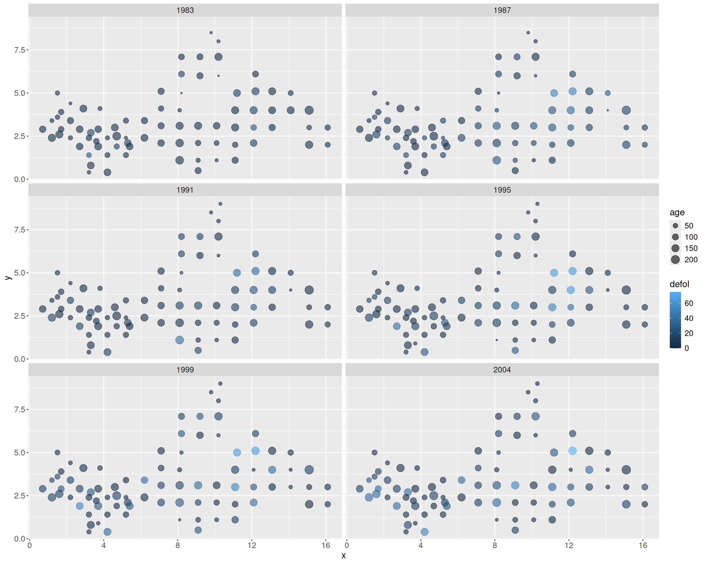
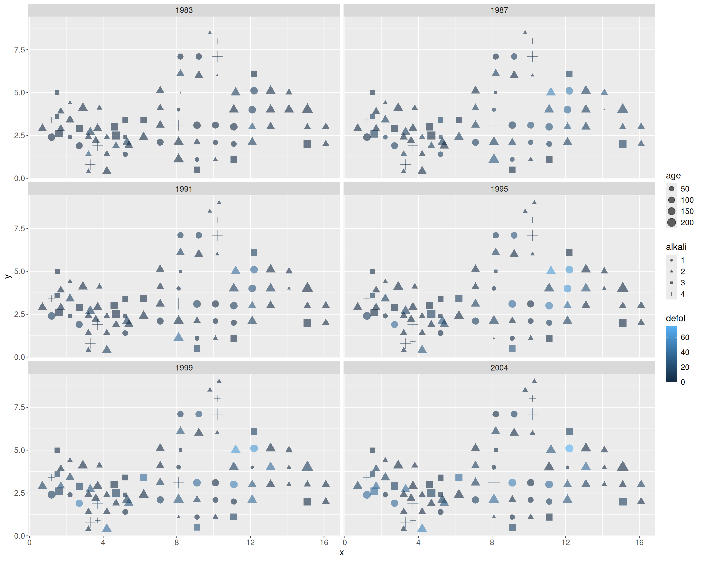

library(tidyverse)5 El paquete ggplot2
En este capítulo se introduce el paquete ggplot2 de R, una de las herramientas de visualización de datos más populares en la actualidad y que ha sido incluso exportado a otros lenguajes (como Python).
5.1 Tidy data
5.1.1 Datos de ejemplo
Utilizaremos un dataset de ejemplo del paquete R agridat (Wright, 2024), que contiene conjuntos de datos provenientes de publicaciones relacionadas con la agricultura, incluyendo cultivos de campo, cultivos arbóreos o estudios con animales, entre otros.
También usaremos un dataset de ejemplo de un completo libro sobre métodos de regresión, ya en su segunda edición (Fahrmeir et al., 2022). Los archivos con los datasets de ejemplo de esta referencia se pueden descargar de su página web, así como también los archivos de código con los modelos sobre estos datos, en R.
Paquete agridat
holland.arthropods: Muestreo de diferentes especies de artrópodos presentes en una malla de 30m x 30m de un campo de trigo cerca de Wimborne, Dorest (Reino Unido). Los muestreos se realizaron en 6 fechas entre junio/julio de 1996. Los conteos para cada especie de artrópodo se agregaron sobre los 6 días totales (Holland et al., 1999).
library(agridat)
data(holland.arthropods)
str(holland.arthropods)'data.frame': 63 obs. of 8 variables:
$ row : int 1 1 1 1 1 1 1 2 2 2 ...
$ col : int 1 2 3 4 5 6 7 1 2 3 ...
$ n.brevicollis: int 6 3 3 2 1 2 1 10 12 1 ...
$ linyphiidae : int 67 114 59 80 102 169 63 106 64 41 ...
$ collembola : int 85 30 56 36 110 38 19 65 38 260 ...
$ carabidae : int 35 24 18 9 13 14 14 18 32 14 ...
$ lycosidae : int 13 22 20 32 28 12 43 28 8 3 ...
$ weedcover : int 42 23 17 21 12 15 13 27 9 10 ...Dataset beech
De acuerdo con la información facilitada en (Fahrmeir et al., 2022), este dataset proviene de un proyecto para comprobar las condiciones en que se encuentra el bosque the Rothenbuch (Spessart), realizado por Axel Göttlein (Tech. Univ., Munich) desde 1982. En este caso, las localizaciones de los árboles examinados están mucho más próximas entre sí de lo habitual en los análisis oficiales a gran escala. Se examinaron árboles en 83 ubicaciones diferentes alrededor de la localidad, centrándose en cinco especies: haya, roble, abeto, alerce y pino. El archivo de datos está restringido a la información sobre las hayas. En concreto, cada año la salud de las hayas se categoriza mediante la variable respuesta defoliation (defoliación), medida en 9 niveles diferentes. La interpretación de los posibles valores es que 0% corresponde a un árbol sano y 100% se asigna a un arbol muerto.
Datos mal codificados
El archivo de datos data/beech.raw incluid en el repositorio de este taller, es una copia del archivo original descargado de la página web oficial del libro. Sin embargo, dicho archivo original contiene 3 valores erróneamente codificados (aparece el valor .) para la columna de la variable ph, concretamente en las filas 1678, 1679 y 1797.
Para evitar errores de lectura, se han recodificado esos tres valores como 4. para los ejemplos de este taller. No obstante, se notifica esta modificación a los usuarios/as que estuviesen interesados en utilizar este dataset para otros fines (como practicar modelos avanzados de regresión).
library(Hmisc)
Adjuntando el paquete: 'Hmisc'The following objects are masked from 'package:dplyr':
src, summarizeThe following objects are masked from 'package:base':
format.pval, unitslibrary(readr)
beech <- read_table("data/beech.raw",
col_types = cols(id = col_integer(), year = col_integer(), age = col_integer(),
canopyd = col_integer(), gradient = col_integer(),
alt = col_integer(), depth = col_integer(), ph = col_double(),
watermoisture = col_factor(levels = c("1", "2", "3")),
alkali = col_factor(levels = c("1","2", "3", "4")),
humus = col_factor(levels = c("0", "1", "2", "3", "4",
"5", "6", "7", "8", "9")),
type = col_factor(levels = c("0","1")),
fert = col_factor(levels = c("0","1"))
))
str(beech)spc_tbl_ [1,796 × 16] (S3: spec_tbl_df/tbl_df/tbl/data.frame)
$ id : int [1:1796] 5 5 5 5 5 5 5 5 5 5 ...
$ year : int [1:1796] 1983 1984 1985 1986 1987 1988 1989 1990 1991 1992 ...
$ defol : num [1:1796] 0 0 0 0 0 0 0 0 0 0 ...
$ x : num [1:1796] 1.5 1.5 1.5 1.5 1.5 1.5 1.5 1.5 1.5 1.5 ...
$ y : num [1:1796] 5 5 5 5 5 5 5 5 5 5 ...
$ age : int [1:1796] 43 44 45 46 47 48 49 50 51 52 ...
$ canopyd : int [1:1796] 100 100 100 100 100 100 100 100 100 100 ...
$ gradient : int [1:1796] 2 2 2 2 2 2 2 2 2 2 ...
$ alt : int [1:1796] 320 320 320 320 320 320 320 320 320 320 ...
$ depth : int [1:1796] 10 10 10 10 10 10 10 10 10 10 ...
$ ph : num [1:1796] 4.61 4.34 4.75 3.99 5.3 3.83 4.05 4.06 4.3 4.84 ...
$ watermoisture: Factor w/ 3 levels "1","2","3": 1 1 1 1 1 1 1 1 1 1 ...
$ alkali : Factor w/ 4 levels "1","2","3","4": 3 3 3 3 3 3 3 3 3 3 ...
$ humus : Factor w/ 10 levels "0","1","2","3",..: 3 5 2 4 2 1 1 3 1 1 ...
$ type : Factor w/ 2 levels "0","1": 2 2 2 2 2 2 2 2 2 2 ...
$ fert : Factor w/ 2 levels "0","1": 2 2 2 2 2 2 2 2 2 2 ...
- attr(*, "spec")=
.. cols(
.. id = col_integer(),
.. year = col_integer(),
.. defol = col_double(),
.. x = col_double(),
.. y = col_double(),
.. age = col_integer(),
.. canopyd = col_integer(),
.. gradient = col_integer(),
.. alt = col_integer(),
.. depth = col_integer(),
.. ph = col_double(),
.. watermoisture = col_factor(levels = c("1", "2", "3"), ordered = FALSE, include_na = FALSE),
.. alkali = col_factor(levels = c("1", "2", "3", "4"), ordered = FALSE, include_na = FALSE),
.. humus = col_factor(levels = c("0", "1", "2", "3", "4", "5", "6", "7", "8", "9"), ordered = FALSE, include_na = FALSE),
.. type = col_factor(levels = c("0", "1"), ordered = FALSE, include_na = FALSE),
.. fert = col_factor(levels = c("0", "1"), ordered = FALSE, include_na = FALSE)
.. )# Para un resumen más completo:
# Hmisc::html(describe(beech))5.2 Anatomía de un gráfico con ggplot2
El paquete ggplot2 sigue los principios de la gramática de gráficos que hemos visto en el Capítulo 4, de forma que nos permite construir un gráfico paso a paso. Para ello se empieza por utilizar la función ggplot():
Indicamos a la función
ggplot()los datos que vamos a representar.Indicamos a
ggplot()qué relaciones queremos visualizar.Elegimos cómo queremos representar gráficamente las relaciones en nuestros datos que hemos indicado en el paso anterior.
Si es necesario, superponemos más elementos gráficos (objetos geométricos o geoms), añadiéndolas a nuestro gráfico una a una.
Incluimos funciones adicionales para ajustar transformar los datos, ajustar o cambiar escalas, añadir etiquetas y título, marcas en los ejes, capas adicionales, etc.
El argumento
data = ....El argumento mapping = aes(...).Elegimos una función geom_...() que determina el tipo de gráfico o elemento gráfico.Veamos estós datos sobre un esquema para hacernos una idea más clara del aspecto que tendrá nuestro código.
1ggplot(data = <DATOS>,
mapping = aes(<CONEXIONES>)) +
2 geom_...(...) +
3 stat_...(...) +
4 <FUNCIONES DE ESCALA Y GUÍAS> +
5 <SISTEMAS COORDENADOS> +
6 <FACETAS> +
7 <TEMA>- 1
- Indicamos qué datos vamos a utilizar y como conectamos esos datos (mapeo) con los elementos estéticos. Esta parte es obligatoria.
- 2
- Añadimos uno o varios objetos geométricos para representar los datos.
- 3
-
Transformamos los datos (funciones
stat_...()), normalmente resumiéndolos de algún modo. - 4
- Ajustamos el mapeo de los datos a los elementos estéticos, modificando la escala de representación o añadiendo elementos de guía para intepretar el gráfico (marcas en ejes, leyenda, etc.).
- 5
-
Configuramos el sistema coordenado de representación (por defecto se usan coordenadas cartesianas): intercambio de ejes X e Y (función
coord_flip()), uso de coordenadas polares (coord_polar()), etc. - 6
- Decidimos si queremos desglosar el gráfico en varios paneles (facets) para presentar simultáneamente varios subgráficos (como hemos visto, útil para comparar entre grupos, evolución temporal y en otros casos).
- 7
- Por último, podemos elegir un tema preconfigurado que adapta el aspecto de muchos de los elementos del gráfico para conseguir un resultado final más armonizado.
5.3 Datos y elementos estéticos
Los dos primeros pasos en nuestro gráfico serán indicar qué datos queremos considerar y qué elementos estéticos vamos a enlazar con dichos datos. En el siguiente ejemplo, guardamos en la variable p el resultado de los dos primeros pasos del proceso.
Cuando los mínimos elementos necesarios para representar el gráfico están ya configurados, la invocación directa de la variable p hace aparecer el gráfico.
Vamos con el primer paso: indicar qué dataset queremos usar.
p <- ggplot(data = holland.arthropods)
p
Ahora, añadimos en el segundo paso las conexiones de los datos con los elementos estéticos.
p <- ggplot(data = holland.arthropods,
mapping = aes(x = lycosidae,
y = weedcover))
pEn la Figura 5.2 podemos ver cómo las variables (atributos) asociadas al eje X y al eje Y de nuestro gráfico, mediante la función aes(), es lo único que se muestra. La zona principal de representación todavía no muestra ningún elemento, porque aún no hemos especificado de qué forma queremos representar la relación entre la variable en X y la que está en Y.
5.4 Objetos geométricos
El paquete ggplot2 incluye una larga lista de funciones de objetos geométricos (abreviados como geom_...()) para añadir a nuestros gráficos.
Continuando con nuestro ejemplo, en el paso 3 del proceso de construcción añadimos un geom sencillo: una nube de puntos para crear un diagrama de dispersión básico (scatterplot) con la función geom_point(). El resultado se muestra en la Figura 5.3. Observamos que, ahora sí, se muestra un punto en color negro en cada cruce de valores de los atributos numéricos representados en los ejes X e Y.
p <- p + geom_point()
pEs posible agregar más de un objeto geométrico al mismo gráfico, siempre y cuando sean compatibles. Continuando con nuestro caso de ejemplo, agregamos sobre el diagrama de dispersión una línea suavizada que muestra la tendencia global, junto con una banda en color gris que la rodea, indicando el error estándar de la curva estimada. El resultado se ilustra en la Figura 5.4.
p <- p + geom_smooth(method = 'loess', formula = y ~ x)
p5.5 Escalas
Las funciones de escala nos permiten controlar diversos elementos que controlan aspectos importantes de la visualización, como:
- Esclas de representación, por ejemplo, para aplicar transformaciones a los datos.
- Límites de representación del gráfico en cada coordenada.
- Acercamiento de la imagen (zooming in).
- Marcas principales en los ejes (breaks).
- Marcas secundarias en los ejes (minor breaks).
- Etiquetas.
- Uso de escalas de representación personalizadas para casos especiales (escala de fecha y hora, escala discreta, agrupamiento de datos por intervalos o bins, unidades monetarias, etc.).
- Ajuste de las escalas de color (cuando mapeamos los valores de un atributo a una paleta de colores o gradación).
- Leyendas del gráfico.
- Forma y tamaño de los símbolos.
- Tipo y anchura de las líneas.
En nuestro caso de ejemplo, podemos ver el efecto que produce cambiar a una escala logarítmica (transformación log10 a nuestros datos de ambos ejes).
p <- p + scale_x_log10() + scale_y_log10()
p5.6 Etiquetas y título
p <- p + labs(x = "Lycosidae (conteo)", y = "Weedcover (conteo)",
title = "Artrópodos presentes en campo de trigo",
subtitle = "Agregación de 6 fechas; junio/julio 1996",
caption = "Ubicación: Wimborne, Dorest (Reino Unido)\nDiseño: Malla de 30m x 30m"
)
p
5.7 Anotaciones
En el capítulo 8 del libro de referencia sobre ggplot 2 (Wickham et al., 2024) se muestran varias funciones de este paquete y varios paquetes adicionales que permiten añadir anotaciones de todo tipo en nuestros gráficos: texto, fórmulas, etiquetas, etc. En ocasiones, algunos paquetes, como directlabels, ofrecen incluso etiquetado automático de los grupos de datos (según los valores de un atributo categórico).
La Figura 5.7 muestra un ejemplo de cuatro anotaciones añadidas manualmente a nuestro gráfico para marcar la ubicación de otros tantos casos atípicos sobre el diagrama de dispersión.
label <- data.frame(
lycosidae = c(5.7, 5.7, 45, 70),
weedcover = c(1, 2, 4,69),
label = c("outlier 1", "outlier 2", "outlier 3", "outlier 4")
)
p + geom_label(data = label, aes(label = label))

5.8 Temas
Por último, los temas nos permiten aplicar un conjunto de parámetros de configuración estéticos ya predefinidos y que dotan al gráfico de un aspecto homogéneo y estilo particular. Además, se puede utilizar la función theme() para crear nuestros propios temas personalizados, combinando las configuraciones que nos parezcan más adecuadas, o para modificar los parámetros de muchos elementos del gráfico.
p + theme_gray()
p + theme_bw()
p + theme_linedraw()
p + theme_minimal()theme_gray() (opción por defecto)
theme_bw()
theme_linedraw()
theme_minimal()
ggplot2.
Además de los temas estándar ya incluidos en ggplot2, existen algunos temas adicionales desarrollados por la comunidad o disponibles en otros paquetes. Un ejemplo es el paquete de extensión ggthemes, que incluye ejemplos de temas inspirados en publicaciones y blogs conocidos como The Economist o FiveThirtyEight.
library(ggthemes)
p + theme_economist() + scale_colour_economist()ggthemes.
5.9 Extensiones de ggplot2
El paquete ggplot2 se ha convertido en una herramienta de visualización de datos tan popular que han surgido bastantes paquetes que extienden su funcionalidad de diversas maneras. Algunos de ellos están recogidos en una lista de extensiones oficiales de ggplot2. Un ejemplo de esta lista es el paquete ggthemes que hemos mencionado en la sección anterior, pero hay más. Algunas de las más útiles son:
ggraph: Incluye diversos geoms para dibujar gráficos para datos de redes y grafos, por ejemplo, en combinación con el paqueteigraph.ggspectra: Incluye stats, geoms y anotaciones para espectros lumínicos, manejados en el paquetephotobiology.ggradar: Extensión que permite crear gráficos de tipo radar, integrados con el resto de componentes deggplot2.ggtree: Ofrece herramientas para visualización de árboles filogenéticos.
La Figura 5.10 muestra ejemplos de gráficos creados con cada uno de estos paquetes de extensión de ggplot2. Se recomienda revisar la documentación del resto de extensiones para descubrir otras herramientas que puedan ser de utilidad (etiquetado de puntos, geoms adicionales, etc.).
gggraph

ggspectra

ggradar
ggtree
ggplot2.
5.9.1 Extensiones adicionales
Además de las extensiones que figuran en el listado anterior, hay otros paquetes que también incluyen funciones interesantes que extienden las herramientas básicas de ggplot2.
ggstatsplot: una de las extensiones más populares y potentes paraggplot2es esta, que permite crear gráficos muy sofisticados y, además, acompañados de detalles y resultados de nuestros modelos estadísticos (Patil, 2021). Veamos un primer ejemplo en la Figura 5.11.
library(ggstatsplot)You can cite this package as:
Patil, I. (2021). Visualizations with statistical details: The 'ggstatsplot' approach.
Journal of Open Source Software, 6(61), 3167, doi:10.21105/joss.03167ggscatterstats(data = mtcars, x = hp, y = mpg)Registered S3 method overwritten by 'ggside':
method from
+.gg ggplot2`stat_xsidebin()` using `bins = 30`. Pick better value with `binwidth`.
`stat_ysidebin()` using `bins = 30`. Pick better value with `binwidth`.Otro buen ejemplo de gráfico de calidad listo para publicar con este paquete es el mostrado en la
@fig-ggstatsplot-betweenstats, que muestra una representación gráfica y los resultados estadísticos
de varios test comparando la diferencia de medias entre grupos.ggbetweenstats(
data = dplyr::filter(
movies_long,
genre %in% c("Action", "Action Comedy", "Action Drama", "Comedy")
),
x = genre,
y = rating,
title = "IMDB rating by film genre",
xlab = "Genre",
ylab = "IMDB rating (average)"
)ggstatsplot.
El paquete `ggstatsplot` también incluye muchas funciones para automatizar el resumen de resultados
de modelos de regresión, tanto frecuentistas como bayesianos, con un total de
[235 modelos soportados](https://indrajeetpatil.github.io/ggstatsplot/articles/web_only/ggcoefstats.html#supported-models).
Veremos algunos ejemplos de estas funciones en el @sec-graphs-model-eval.patchwork: permite componer fácilmente parrillas de gráficos con diferentes configuraciones a partir de gráficos individuales creados conggplot2. Además, usa una sintaxis bastante sencilla y directa, puesto que el operador+coloca un gráfico junto a otro, mientras que los operadores|y/construyen una rejilla en dirección horizontal o vertical, respectivamente. La figura Figura 5.13 ilustra con un ejemplo con código cómo funciona este paquete. Se recomienda encarecidamente consultar la página de documentación depatchworkpara conocer más detalles y ejemplos.
library(ggplot2)
library(patchwork)
p1 <- ggplot(mtcars) + geom_point(aes(mpg, disp)) # Primer gráfico
p2 <- ggplot(mtcars) + geom_boxplot(aes(gear, disp, group = gear)) # Segundo gráfico
p3 <- ggplot(mtcars) + geom_smooth(aes(disp, qsec),
method = 'loess',
formula = 'y ~ x')
p4 <- ggplot(mtcars) + geom_bar(aes(carb))
(p1 | p2 | p3) /
p4patchwork para componer conjuntos de gráficos creados con ggplot2.
GGally: otro paquete tremendamente potente, que proporciona funciones para creación automática de gráficos con distintos fines: exploración de datos, gráficos bivariantes, evaluación de modelos, etc. Veremos algunos ejemplos de este paquete en el Capítulo 6. Un ejemplo muy habitual y de gran utilidad es la funciónggpairs(), que construye una matriz para comparación de datos multivariantes por parejas, tal y como muestra la Figura 5.14.
library(GGally)Registered S3 method overwritten by 'GGally':
method from
+.gg ggsidepm <- ggpairs(tips, mapping = aes(color = sex), columns = c("total_bill", "time", "tip"))
pm`stat_bin()` using `bins = 30`. Pick better value with `binwidth`.`stat_bin()` using `bins = 30`. Pick better value with `binwidth`.ggpairs().
ggpubr: por último, el paqueteggpubrincluye una serie de funciones para facilitar la composición de gráficos orientados a publicaciones científicas. La Figura 5.15 muestra un ejemplo con la funciónggboxplot(), para crear boxplots paralelos que, además, muestren información sobre contrastes de hipótesis sobre si las diferencias entre las medias de los grupos son estadísticamente significativas.
library(ggpubr)
data("ToothGrowth")
df <- ToothGrowth
# Especificamos las comparaciones que se mostrarán
p <- ggboxplot(df, x = "dose", y = "len",
color = "dose", palette =c("#00AFBB", "#E7B800", "#FC4E07"),
add = "jitter", shape = "dose")
my_comparisons <- list( c("0.5", "1"), c("1", "2"), c("0.5", "2") )
p + stat_compare_means(comparisons = my_comparisons)+ # Añadir p-valores de comparaciones
stat_compare_means(label.y = 50) # Añadir contraste global diferencia entre mediasWarning in wilcox.test.default(c(4.2, 11.5, 7.3, 5.8, 6.4, 10, 11.2, 11.2, :
cannot compute exact p-value with tiesWarning in wilcox.test.default(c(4.2, 11.5, 7.3, 5.8, 6.4, 10, 11.2, 11.2, :
cannot compute exact p-value with tiesWarning in wilcox.test.default(c(16.5, 16.5, 15.2, 17.3, 22.5, 17.3, 13.6, :
cannot compute exact p-value with ties5.10 Taller práctico 1: construcción de gráficos paso a paso
Vamos a utilizar el dataset beech, con datos sobre el estado de salud de las hayas cerca de la localidad alemana de Rothenbuch (Spessart), para componer otros ejemplos de construcción de gráficos para visualización de datos paso a paso con ggplot2.
beech_years <- beech |>
filter(year == 1983 | year == 1987 |
year == 1991 | year == 1995 |
year == 1999 | year == 2004)
p_beech <- ggplot(data = beech_years,
aes(x = x, y = y,
color = defol, size = age)) +
geom_point(alpha = 0.6) +
facet_wrap(~year, nrow = 3) +
theme(
legend.text = element_text(size = 12),
legend.title = element_text(size = 14),
strip.text = element_text(size = 12),
axis.text = element_text(size = 12),
axis.title = element_text(size = 14),
)
p_beech

p_beech <- ggplot(data = beech_years,
aes(x = x, y = y,
color = defol, size = age)) +
geom_point(aes(shape = alkali), alpha = 0.6) +
facet_wrap(~year, nrow = 3) +
theme(
legend.text = element_text(size = 12),
legend.title = element_text(size = 14),
strip.text = element_text(size = 12),
axis.text = element_text(size = 12),
axis.title = element_text(size = 14)
)
p_beech
